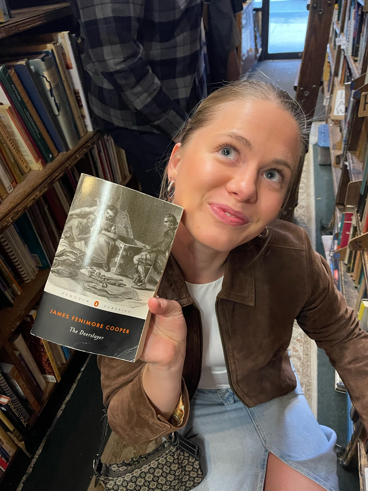

My Reading Journey
Hello! I am a senior studying Business and UX Design. For my Final Project, I created a website to document some of my favorite books and create a wishlist for books that I want to read in the future.
As a child, I was an avid reader and even won a book reading competition for my entire fifth-grade class. My love for reading was insatiable. I would read random books from the library, books gifted to me by my teachers, or even books I found on dusty shelves in our attic. However, when I entered middle school, my interest in reading waned. I became more focused on my new friends, my sisters, and scrolling on my phone. For the next 4-5 years, I had a negative relationship with reading. Even when a book was assigned in class, I would rely on SparkNotes to catch up.
It wasn't until COVID hit that I realized how fast-paced my life had become and how much I needed to slow down, calm my mind, and immerse myself in a good book. Since then, my reading habits have been pretty steady; I always have a book or two on hand for when I need to calm down my mind.
I hope that this website helps others on their reading journey and maybe even inspires some of you to pick up a book as well! I promise you won't regret it 😊